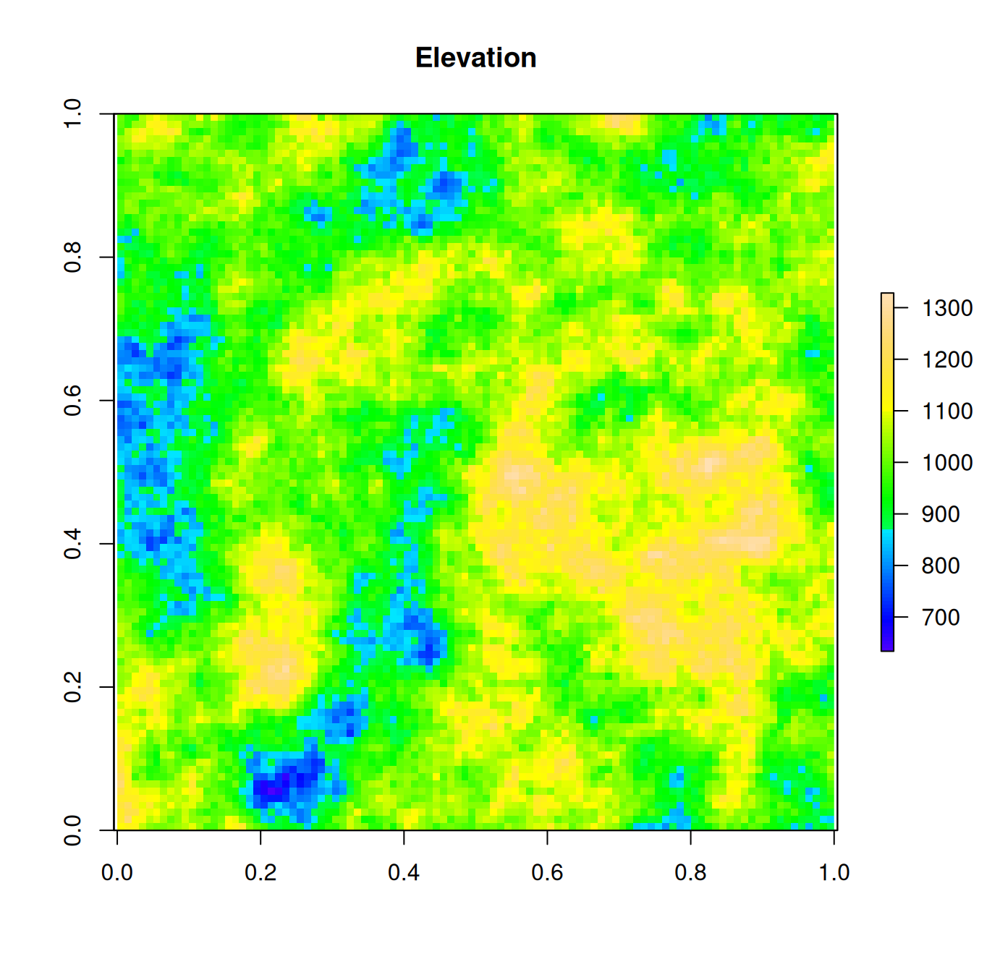
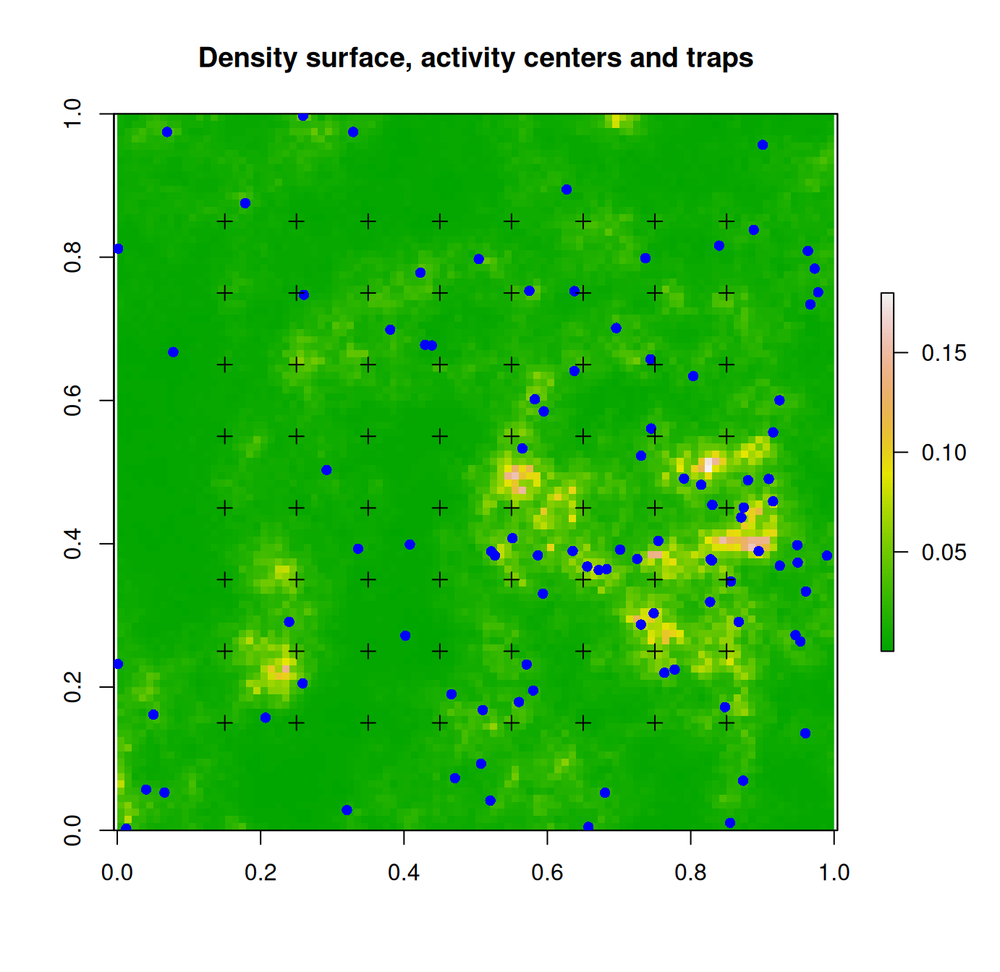
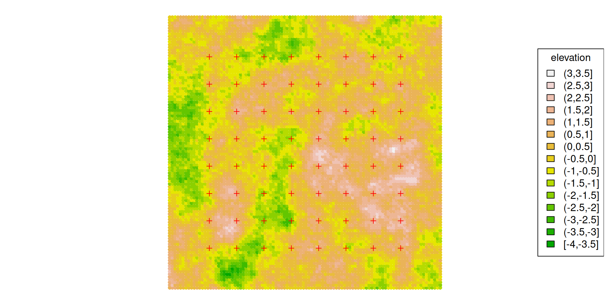
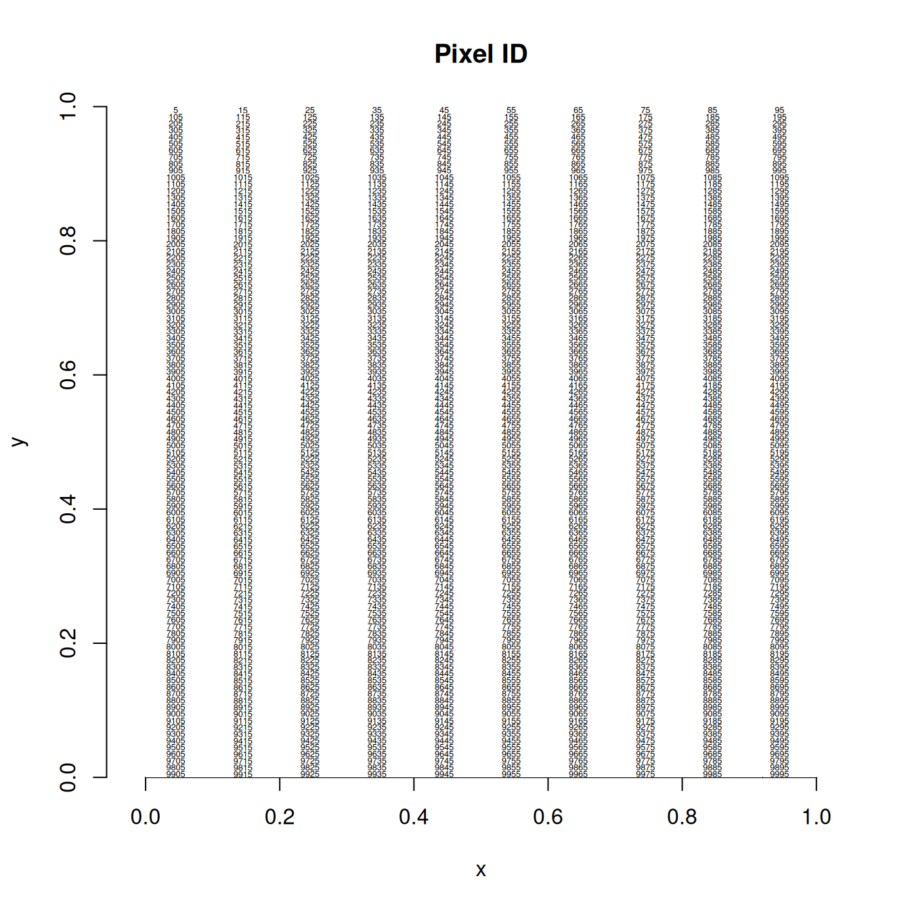
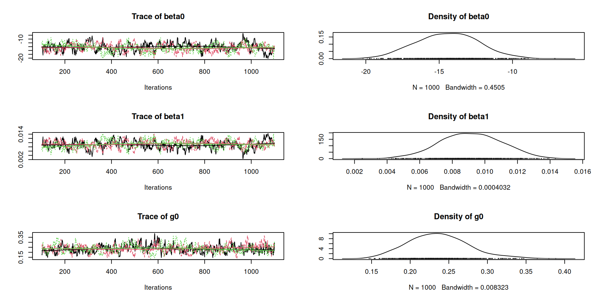
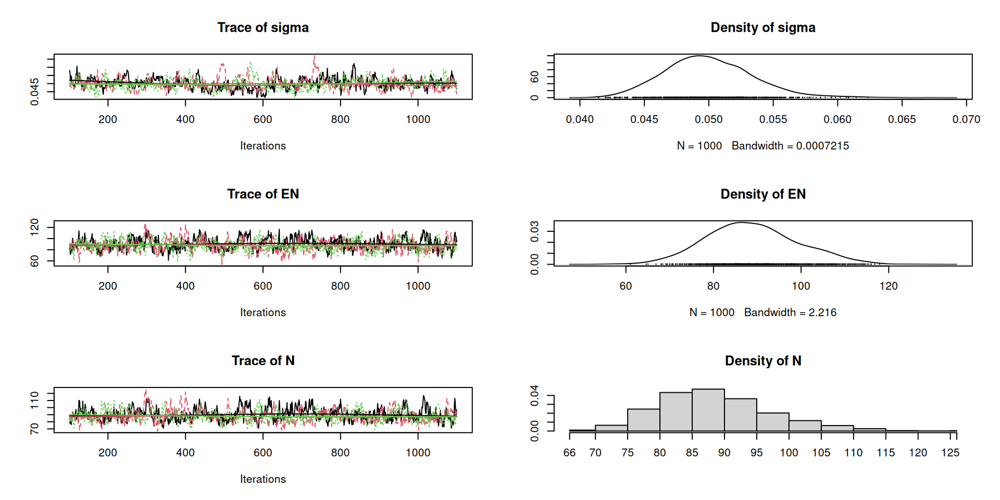
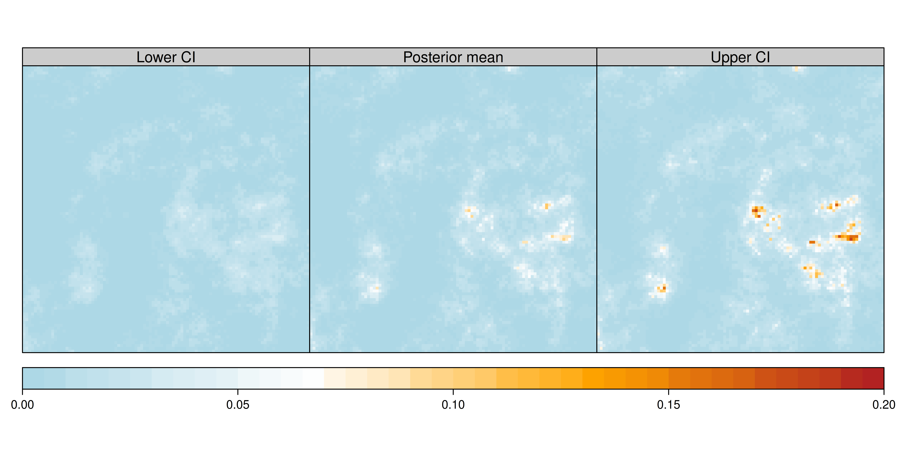
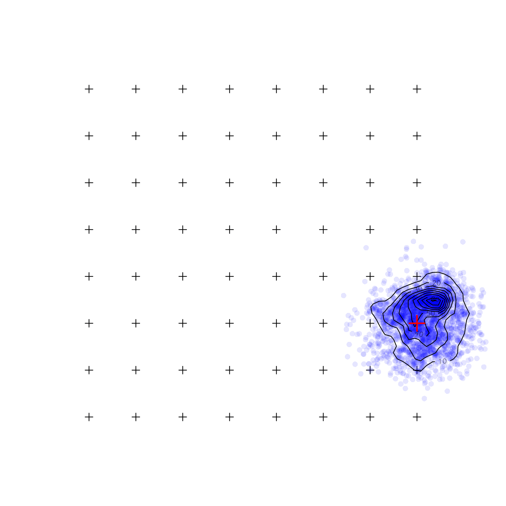

Spatial capture-recapture for
closed populations: Part II
Mapping density surfaces and activity centers
WILD(FISH) 8390
Inference for Models of Fish and Wildlife Population Dynamics
State model (a spatial point process model) \[ \lambda({\bf s}) = \exp(\beta_0 + \beta_1 w_1({\bf s}) + \beta_2 w_2({\bf s}) + \cdots) \\ \Lambda = \int_{\mathcal{S}} \lambda({\bf s}) \; \mathrm{d}{\bf s} \\ N \sim \mathrm{Pois}(\Lambda) \\ {\bf s}_i \propto \lambda({\bf s}) \;\; \mathrm{for}\; i=1,\dots,N \]
Observation model (supposing \(N\) was known) \[ p_{ij} = g_0\exp(-\|{\bf s}_i - {\bf x}_j\|^2/(2\sigma^2)) \;\; \mathrm{for}\, j=1,\dots,J \\ y_{ijk} \sim \mathrm{Bernoulli}(p_{ij}) \]
\(\lambda({\bf s})\) – “Intensity function” describing expected density of individuals at location \(\bf s\)
\(\Lambda\) – Expected number of individuals in the spatial region \(\mathcal{S}\)
\(N\) – Realized number of individuals (ie, population size)
\({\bf s}_i\) – Location of the \(i\)th activity center
\({\bf x}_j\) – Location of trap \(j\)
\(\|{\bf s}_i - {\bf x}_j\|\) – Euclidean distance between \({\bf s}_i\) and \({\bf x}_j\)
\(g_0\) – Capture probability when distance between activity centers and traps is 0
\(\sigma\) – Scale parameter of encounter function
\(p_{ij}\) – Capture probability
\(y_{ijk}\) – Spatial capture histories
There are many varieties of spatial point processes, including:
All share a few properties
\[ E(N) = \Lambda = \int_{\mathcal{S}} \lambda({\bf s}) \;\mathrm{d}{\bf s} \]
Properties
We can use a fitted model to make maps of the following:
Third, simulate \(N\)
[1] 98Fourth, simulate \({\bf s}_1, \dots, {\bf s}_N\). To do this, we’ll pick pixels proportional to density. Then we’ll jitter each point inside its pixel.

Look at distances between first 4 individuals and first 5 traps.
Compute capture probability
Look at capture probs for first 4 individuals and first 5 traps.
Simulate capture histories for all \(N\) individuals
Import data from two text files.
Create the “habitat mask”, which defines the state-space and the spatial covariates. First, prepare the elevation covariate.
elevation.xyz <- as.data.frame(elevation, xy=TRUE)
elevation.xyz$y <- round(elevation.xyz$y, 3) ## Fix numerical fuzz
elevation.xyz.m <- elevation.xyz
elevation.xyz.m$x <- elevation.xyz$x*1000 ## Convert units to meters
elevation.xyz.m$y <- elevation.xyz$y*1000
elevation.xyz.m$elevation <- scale(elevation.xyz$elevation) ## Standardize
elevation.m <- rasterFromXYZ(elevation.xyz.m)
Model density as a function of elevation.
beta SE.beta lcl ucl
D -0.5600286 0.23323698 -1.0171647 -0.1028925
D.elevation 0.9419116 0.18885718 0.5717584 1.3120649
g0 -1.1779499 0.21368740 -1.5967695 -0.7591303
sigma 3.9089834 0.06556957 3.7804694 4.0374974Estimates on original scale (at average covariate values).
We can still estimate \(N\) as before.
Version 1: SCR model with inhomogeneous point process.
\[ \lambda({\bf s}) = \exp(\beta_0 + \beta_1 \mathrm{ELEV}({\bf s})) \\ {\bf s}_i \propto \lambda({\bf s}) \\ \Lambda = E(N) = \int_{\mathcal{S}} \lambda({\bf s})\; \mathrm{d}{\bf s} \\ \psi = \Lambda/M \\ z_i \sim \mathrm{Bern}(\psi) \\ p_{ij} = g_0\exp(-\|{\bf s}_i-{\bf x}_j\|^2/(2\sigma^2)) \\ y_{ijk} \sim \mathrm{Bern}(z_i\times p_{ij}) \\ N=\sum_{i=1}^M z_i \]
This version is relatively slow and doesn’t mix that well.
model {
beta0 ~ dnorm(0, 0.1)
beta1 ~ dnorm(0, 0.1)
g0 ~ dunif(0, 1)
sigma ~ dunif(0, 0.5)
for(g in 1:G) { ## Loop over pixels
lambda[g] <- exp(beta0 + beta1*elevation[g])*pixelArea
pi[g] <- lambda[g]/Lambda }
Lambda <- sum(lambda)
EN <- sum(lambda) ## Expected value of N
psi <- EN/M
for(i in 1:M) {
s[i,1] ~ dunif(xlim[1], xlim[2])
s[i,2] ~ dunif(ylim[1], ylim[2])
pixel[i] <- lookup[round((ylim[2]-s[i,2])/delta+0.5), ## row
round((s[i,1]-xlim[1])/delta+0.5)] ## column
logProb[i] <- log(pi[pixel[i]])
zeros[i] ~ dpois(-logProb[i]) ## zeros trick for IPP
z[i] ~ dbern(psi)
for(j in 1:J) {
dist[i,j] <- sqrt((s[i,1]-x[j,1])^2 + (s[i,2]-x[j,2])^2)
p[i,j] <- g0*exp(-dist[i,j]^2/(2*sigma^2)) } }
for(i in 1:n) { ## Model for observed capture histories
for(j in 1:J) {
y.tilde[i,j] ~ dbinom(p[i,j], K) } }
for(i in (n+1):M) { ## Model for augmented guys
PrAtLeastOneCap[i] <- 1-prod(1-p[i,])^K
zero.cap[i] ~ dbern(PrAtLeastOneCap[i]*z[i]) }
N <- sum(z)
}Version 2: SCR model with inhomogeneous point process
\[ \tilde{\lambda}({\bf s}) = \exp(\beta_1 \mathrm{ELEV}({\bf s})) \\ {\bf s}_i \propto \tilde{\lambda}({\bf s}) \\ z_i \sim \mathrm{Bern}(\psi) \\ p_{ij} = g_0\exp(-\|{\bf s}_i-{\bf x}_j\|^2/(2\sigma^2)) \\ y_{ijk} \sim \mathrm{Bern}(z_i\times p_{ij}) \\ N=\sum_{i=1}^M z_i \]
This version is faster and mixes better.
model {
psi ~ dunif(0, 1) ## Can't put prior on psi *and* beta0
beta0 <- log(M*psi/Lambda) ## Algebra
beta1 ~ dnorm(0, 0.1)
g0 ~ dunif(0, 1)
sigma ~ dunif(0, 0.5)
for(g in 1:G) { ## Loop over pixels
lambda[g] <- exp(beta1*elevation[g])*pixelArea
pi[g] <- lambda[g]/Lambda }
Lambda <- sum(lambda)
EN <- M*psi
for(i in 1:M) {
s[i,1] ~ dunif(xlim[1], xlim[2])
s[i,2] ~ dunif(ylim[1], ylim[2])
pixel[i] <- lookup[round((ylim[2]-s[i,2])/delta+0.5), ## row
round((s[i,1]-xlim[1])/delta+0.5)] ## column
logProb[i] <- log(pi[pixel[i]])
zeros[i] ~ dpois(-logProb[i]) ## zeros trick for IPP
z[i] ~ dbern(psi)
for(j in 1:J) {
dist[i,j] <- sqrt((s[i,1]-x[j,1])^2 + (s[i,2]-x[j,2])^2)
p[i,j] <- g0*exp(-dist[i,j]^2/(2*sigma^2)) } }
for(i in 1:n) { ## Model for observed capture histories
for(j in 1:J) {
y.tilde[i,j] ~ dbinom(p[i,j], K) } }
for(i in (n+1):M) { ## Model for augmented guys
PrAtLeastOneCap[i] <- 1-prod(1-p[i,])^K
zero.cap[i] ~ dbern(PrAtLeastOneCap[i]*z[i]) }
N <- sum(z)
}There’s another version where we treat space as discrete, rather than continuous.
Under this formulation, activity centers are snapped to pixel centers, and a categorical prior is used instead of a continuous distribution.
This version is similar to what is used in likelihood-based methods.
It works fine, but it’s slow in JAGS and it adds an extra level of approximation.
We need to do the following to use version 2:
Create the lookup table
G <- nrow(elevation.xyz) ## nPixels
lookup <- matrix(1:G, nrow=nrow(elevation), ncol=ncol(elevation),
byrow=TRUE) ## To be consistent with raster package
delta <- res(elevation)[1] ## resolution
image(seq(delta/2, 1-delta/2, length=100),
seq(delta/2, 1-delta/2, length=100), lookup, asp=1,
xlab="x", ylab="y", frame=FALSE, col=0, main="Pixel ID")
text(elevation.xyz$x[seq(5, G, by=10)],
elevation.xyz$y[seq(5, G, by=10)], seq(5, G, by=10), cex=0.4)
Data
M <- 150
y.tilde <- apply(y, c(1,2), sum)
n <- nrow(y)
jags.data.SCR.elev <- list(
y.tilde=y.tilde, n=n, M=M, J=J, G=G, delta=delta,
lookup=lookup, pixelArea=delta^2*1e4, ## Convert to hectares
elevation=elevation.xyz$elevation, z=c(rep(1, n), rep(NA, M-n)),
zeros=rep(0, M), K=K, zero.cap=rep(0, M), x=x, xlim=c(0,1), ylim=c(0,1))Inits and parameters
MCMC
Iterations = 101:1100
Thinning interval = 1
Number of chains = 3
Sample size per chain = 1000
1. Empirical mean and standard deviation for each variable,
plus standard error of the mean:
Mean SD Naive SE Time-series SE
EN 88.850648 10.474479 1.912e-01 0.5282427
N 88.959000 8.631733 1.576e-01 0.4805394
beta0 -14.443557 2.107711 3.848e-02 0.1669706
beta1 0.009138 0.001887 3.444e-05 0.0001482
g0 0.236503 0.039253 7.167e-04 0.0026025
sigma 0.050003 0.003434 6.270e-05 0.0002085
2. Quantiles for each variable:
2.5% 25% 50% 75% 97.5%
EN 69.541232 81.586838 88.156952 95.47809 110.20447
N 74.975000 83.000000 88.000000 94.00000 109.00000
beta0 -18.451935 -15.929415 -14.411138 -12.97787 -10.27970
beta1 0.005432 0.007817 0.009106 0.01045 0.01273
g0 0.165442 0.209116 0.234794 0.26129 0.32409
sigma 0.043949 0.047650 0.049761 0.05217 0.05745

Extract posterior samples of \(\beta_0\) and \(\beta_1\).
Compute density surface for every MCMC sample
lambda.post <- matrix(NA, n.pixels, n.samples)
for(i in 1:n.samples) {
lambda.post[,i] <- exp(
beta.post[i,"beta0"] +
beta.post[i,"beta1"]*elevation.xyz$elevation)
}
lambda.post.mean <- rowMeans(lambda.post)
lambda.post.lower <- apply(lambda.post, 1, quantile, prob=0.025)
lambda.post.upper <- apply(lambda.post, 1, quantile, prob=0.975)Make multi-panel figure showing posterior mean density surface, along with 95% CI.
library(latticeExtra)
trellis.par.set(
regions=list(
col=colorRampPalette(c("lightblue", "white", "orange", "firebrick"))(50))) ## Colors
panel1 <- levelplot(lambda.post.lower ~ x+y, elevation.xyz, aspect="iso",
at=seq(0,0.20,0.005), ## Resolution of color key
colorkey=list(space="bottom"),
xlab="", ylab="")
panel2 <- levelplot(lambda.post.mean ~x+y, elevation.xyz, aspect="iso",
at=seq(0,0.20,0.005))
panel3 <- levelplot(lambda.post.upper ~x+y, elevation.xyz, aspect="iso",
at=seq(0,0.20,0.005))
panels <- c(panel1, panel2, panel3)
panels <- update(
panels, scales=list(draw=FALSE), layout=c(3,1),
xlab="", ylab="",
strip=strip.custom(bg=gray(0.8),
factor.levels=c("Lower CI","Posterior mean","Upper CI")))
plot(panels)
We need to monitor \(z\) and \({\bf s}_i\).
Extract posterior samples of \(z\) and \({\bf s}_i\).
Chop activity centers into discrete intervals, then tabulate.
lambda.r.post <- array(NA, c(sqrt(n.pixels), sqrt(n.pixels), n.samples))
for(i in 1:n.samples) {
si1.post.d <- cut(s1.post[i,z.post[i,]==1], breaks=seq(0, 1, delta))
si2.post.d <- cut(s2.post[i,z.post[i,]==1], breaks=seq(0, 1, delta))
pixel.counts <- table(si2.post.d, si1.post.d)
lambda.r.post[,,i] <- pixel.counts[sqrt(n.pixels):1,]
}
Just as we can estimate both the realized and expected value of \(N\), we can also estimate the realized and expected value of abundance (or density) at each location in the region of interest.
Sometimes, the region of interest will be different than \(\cal S\), and we can easily obtain estimates of abundance in subsets of \(\mathcal{S}\).
When we get back to SCR later, we’ll talk about modeling both spatial and temporal variation in density, as it arises from variation in demography.
No assignment this week.
Work on your paper.